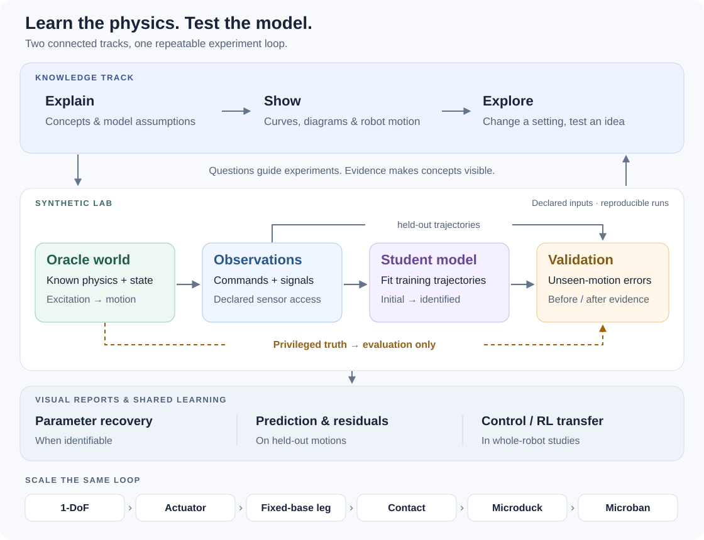

Learn robot system identification by seeing it work.
Build the vocabulary, run controlled synthetic experiments, then carry the same evidence discipline onto actuators, legs, and complete robots. Each lab adds only enough complexity to answer one new question.
L0 means Lab 0. It is the smallest complete SysID loop, not a difficulty score or the whole course.
See all three tracksThree tracks, one method
Knowledge explains the ideas. Synthetic labs isolate them with known truth. Hardware stages test the same workflow against measurement limits and effects the simulator did not include.
Knowledge
Concepts you need to design, fit, and challenge an identification experiment.
- K0Why SysID mattersModel mismatch, prediction, and sim-to-reallive in L0
- K1SysID fundamentalsPlant, input, state, observation, parameternotes
- K2Robot dynamicsInertia, gravity, coupling, contactplanned
- K3Actuator modelingTorque response, friction, delay, complianceplanned
- K4Experiment designExcitation, sensitivity, identifiabilityplanned
- K5EstimationLeast squares, nonlinear and population methodsplanned
- K6ValidationHeld-out conditions and residual diagnosisplanned
- K7Parameter meaningPhysical, effective, nuisance, uncertainplanned
- K8SysID to sim-to-realTargeted randomization and robust controlplanned
Synthetic labs
Runnable experiments where Oracle truth is known but hidden from the estimator.
- L01-DoF foundationsInertia and damping with declared fit and validation.interactive
- L1Servo-loaded pendulumCommand delay, phase residuals, and held-out prediction. Read L1 notesinteractive
- L2Fixed-base legCoupling, gravity, parameter compensationplanned
- L3Leg with contactGround and sole uncertaintyplanned
- L4Whole MicroduckComponent-first versus global fittingplanned
- L5Microban humanoidParameter sharing and scaleplanned
- L6Sim-to-sim mismatchDifferent model and numerical implementationsplanned
Hardware transfer
Apply the established experiment and validation contract to physical systems.
- H0Actuator benchCalibration, timing, noise, operating conditionsplanned
- H1Microduck / MicrobanSubsystem and whole-robot validationplanned
- H2Full humanoidScalable data, fitting, and deployment workflowplanned

Every lab keeps the roles explicit
The True system produces observations. The Initial model is what we have before identification. The Identified model is the fitted result. The Oracle truth may be shown for teaching and evaluation, but it never enters the estimator.
KKnowledge chapter: understand a concept.LSynthetic lab: test the concept with controlled truth.HHardware stage: confront calibration and unmodeled reality.One question per clip
Short pre-rendered clips for L0 and L1, each answering a single question. They are built from the same numerical runs as the reports and the Marimo lessons, so the curves and numbers stay in step. They are not interactive: they set up the experiment, and the lab stays the place to change a parameter and refit.
L0 · what does the mismatch look like?
L0 · did fitting actually fix it?
L0 · how does the fit get there?
(J, b), with the route it took. On the right, the model's own curve at each recorded iterate collapses onto the truth.L0 · was that one lucky start?
L1 · where does the delay hide?
L1 · why a chirp makes it visible?
L1 · did the fit predict held-out motion?
Render commands and the optional graphics dependencies are documented in demos/manim/README.md.
One loop at increasing scale
The plant becomes more complex, and later runs may move from browser interaction to queued computation. The evidence contract remains the same.
01BoundaryName input, output, and unknowns.02ExciteReveal the target dynamics.03ObserveDeclare estimator-visible signals.04FitEstimate model parameters.05ValidatePredict held-out behavior.06DiagnoseRead residuals and uncertainty.